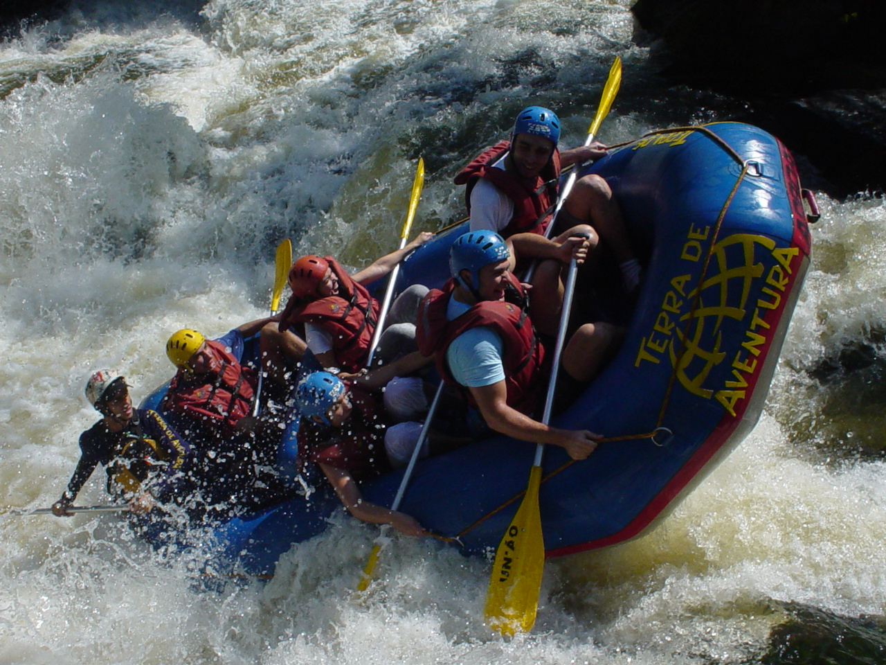
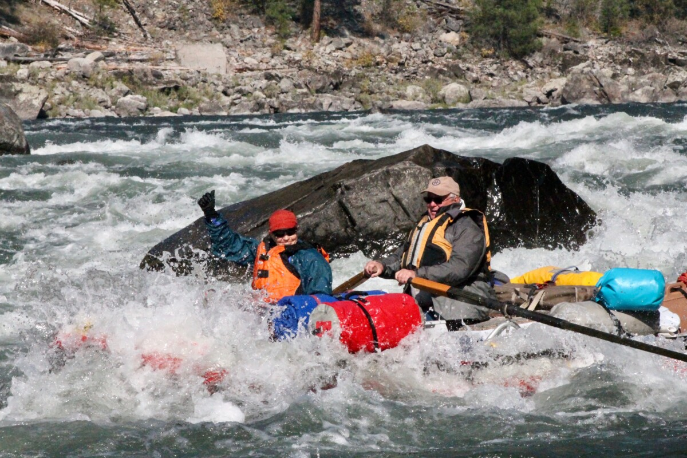
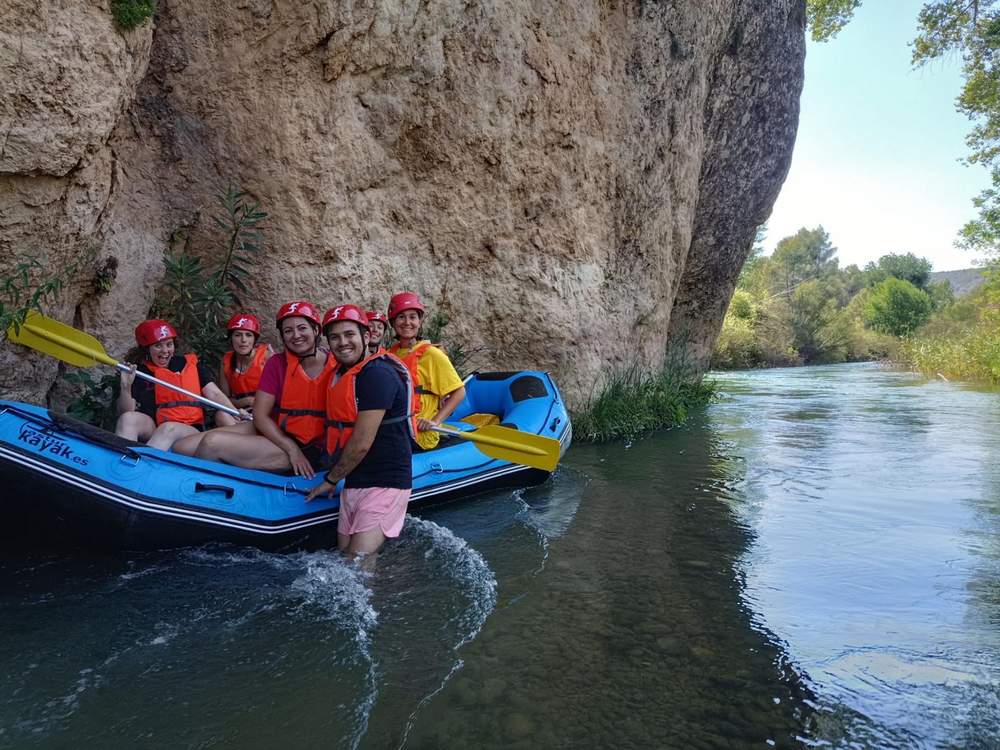

OUR TOP 3 TRIPS!
Full day Valencia River Adventure:
Embark on an exhilarating journey along the scenic Valencia River, a full-day adventure that promises thrills and unforgettable memories. Navigate through thrilling rapids, soak in breathtaking natural landscapes, and enjoy moments of tranquility amidst the rushing waters. With experienced guides leading the way, this trip offers excitement for both novice and experienced rafters alike. Lunch is provided, ensuring you stay energized for the entire adventure.
Weekend Big Mallard Challenge:
Calling all adrenaline junkies! The Big Mallard Weekend Challenge is tailored for experienced rafters craving an adrenaline rush. Conquer the thrilling rapids of the Big Mallard River, known for its fast-paced currents and intense drops. This weekend trip is designed for those with high rafting levels, offering an exciting challenge amidst stunning natural surroundings. Gear up for a weekend of action-packed adventure and camaraderie with fellow thrill-seekers.
Half-Day Little Fish River Excursion:
Perfect for beginners and families, the Half-Day Little Fish River Excursion offers a taste of rafting adventure without the commitment of a full day. Navigate through gentle currents and easy-going rapids, ideal for first-time rafters and those seeking a relaxed outing. Enjoy the beauty of the Little Fish River as you soak in the tranquility of the surrounding landscape. This trip is a fantastic introduction to the joys of rafting for all ages.
ALL OUR ADVENTURES
| Trips | How long? | Description | Cost |
|---|---|---|---|
| Valencia River | Full-Day / Two days | Thrilling full-day rafting trip on Valencia River with experienced guides. Lunch provided. | $150 per person / $300 per person |
| Big Mallard Challenge | Weekend | Intense weekend rafting experience on Big Mallard River for experienced rafters. | $250 per person |
| Little Fish River Excursion | Half-Day | Beginner-friendly half-day rafting trip on Little Fish River with gentle rapids. | $100 per person |
| Kennebec River Retreat | Weekend | Relaxing weekend getaway rafting on Kennebec River with camping and expert guides | $350 per person |
| Canyon Rapids Expedition | Two days | Adrenaline-fueled two-day rafting adventure on Canyon Rapids for intermediate rafters. | $400 per person |